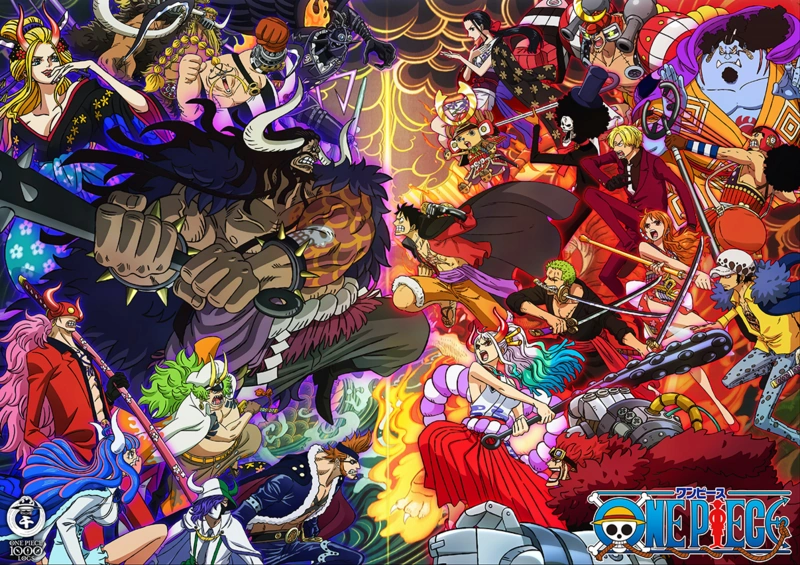
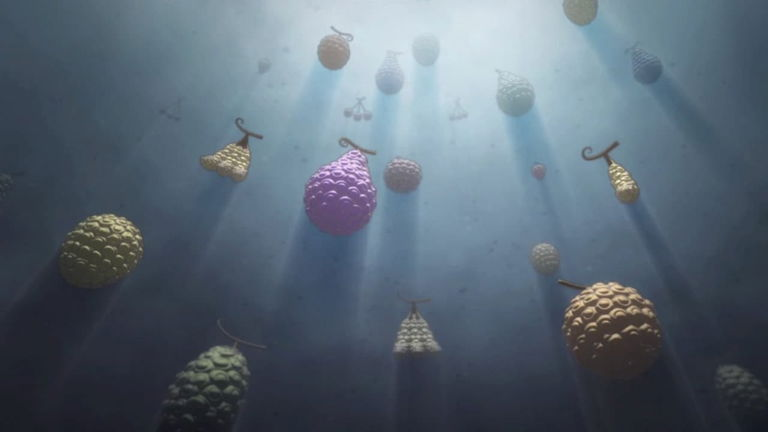

¿Qué es One Piece?
One Piece es una obra maestra del manga y anime creada por Eiichiro Oda. Narra la travesía de Monkey D. Luffy, un joven con cuerpo de goma que sueña con convertirse en el Rey de los Piratas.
Personajes Principales
- Luffy: Capitán optimista con el poder de la fruta Gomu Gomu.
- Zoro: Espadachín de tres katanas, leal y brutal en combate.
- Nami: Navegante experta y amante del dinero.
- Sanji: Cocinero elegante con patadas letales.
Arcos Memorables
Desde Arlong Park hasta Wano, cada arco de One Piece está lleno de emoción, crecimiento y batallas épicas.
Frutas del Diablo
Las frutas del diablo otorgan poderes sobrenaturales a quienes las comen, pero les quitan la habilidad de nadar.
Reflexión Final
One Piece no es solo una historia de piratas. Es una oda a la libertad, a luchar por tus sueños sin importar los obstáculos, y a encontrar una familia en los lugares más inesperados.